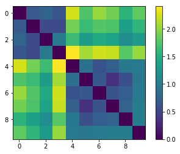

For the theme of my dataset, I choose the music of artist Adele. Through lab tasks and extra work I have accumulated a wide variety
of transcribed scores, MEI files, metadata and interesting analysis all available below.
Notated Data
To access the notated pieces that I transcribed, click the links below:
To accompany my transcribed documents, I carried out some analysis on the pieces using jSymbolic. Below you can access the raw CSV data
or you can access an annotated, edited Excel file where I put some of the analysis into context and made some comparisons between the songs.
Using the Python library "music21", I created piano roll and histogram graphics for all four pieces that can be viewed here.
Other Material
Part of this project involved using computer tools to investigate music as soung and digital audio. This involved tasks such as creating metadata, spectrograms, chromagrams and investigating similarity and computer transcription.
Below is evidence of my work for each of these lab task.
In Week 8's task, I identified the most important technical / non-technical metadata for three pieces of music sourced online and created spectrograms and waveform images for each song. I also then compared these two visualisations
in order to evaluate advantages of time-frequency analysis over waveform based analysis. I have compiled my metadata, images and files in this document.
In Week 9's task, I created Spectrograms, Mel Frequency Cepstral Coefficient and Chromagrams for three tracks. The second part of the task involved me comparing raw features in Python to produce and compare histograms for each song.
The images and raw data, CSV files can be accessed here.
In Week 10's task, I firstly created a similarity matrix for a selection of songs from different genres:

I then sourced a MuseScore composition for "Dancing Queen" to test out the accuracy of automatic, computer transcription. My results and analysis can be found here